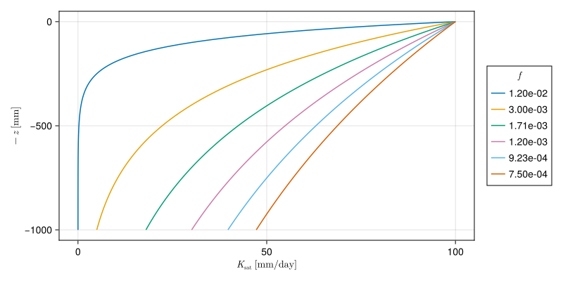

The SBM vertical concept has its roots in the Topog_SBM model but has had considerable changes over time. The main differences are:
The unsaturated zone can be split-up in different layers
The addition of evapotranspiration losses
The addition of a capillary rise
The sections below describe the working of the SBM vertical concept in more detail.
Precipitation
The division between solid and liquid precipitation (snowfall and rainfall, respectively) is performed based on the air temperature (see the section on snow and glaciers). The amount of rainfall is subject to interception, and ultimately becomes available for evaporation and/or soil processes.
Rainfall interception
Two different interception models are available: the analytical Gash model, and the modified Rutter model. The simulation timestep defines which interception model is used, where daily (or larger) timesteps use the Gash model, and timesteps smaller than daily use the modified Rutter model.
The analytical (Gash) model (Gash, 1979)
The analytical model of rainfall interception is based on Rutter’s numerical model. Simplifications allow the model to be applied on a daily basis, although a storm-based approach will yield better results in situations with more than one storm per day. The amount of water needed to completely saturate the canopy is defined as:
where \(\overline{R}\) is the average precipitation intensity on a saturated canopy and \(\overline{E}_{w}\) the average evaporation from the wet canopy and with the vegetation parameters \(S\), \(p\) and \(p_t\) as defined previously. The model uses a series of expressions to calculate the interception loss during different phases of a storm. An analytical integration of the total evaporation and rainfall under saturated canopy conditions is performed for each storm to determine average values of \(\overline{E}_{w}\) and \(\overline{R}\). The total evaporation from the canopy (the total interception loss) is calculated as the sum of the components listed in the table below. Interception losses from the stems are calculated for days with \(P\geq S_{t}/p_{t}\). \(p_t\) and \(S_t\) are small and neglected.
Formulation of the components of interception loss according to Gash:
Components
Interception loss
For \(m\) small storms (\(P_{g}<{P'}_{g}\))
\((1-p-p_{t})\sum_{j=1}^{m}P_{g,j}\)
Wetting up the canopy in \(n\) large storms (\(P_{g}\geq{P'}_{g}\))
Evaporation after rainfall ceases for \(n\) large storms
\(nS\)
Evaporation from trunks in \(q\) storms that fill the trunk storage
\(qS_{t}\)
Evaporation from trunks in \(m+n-q\) storms that do not fill the trunk storage
\(p_{t}\sum_{j=1}^{m+n-q}P_{g,j}\)
In applying the analytical model, saturated conditions are assumed to occur when the hourly rainfall exceeds a certain threshold. Often a threshold of 0.5 mm/hr is used. \(\overline{R}\) is calculated for all hours when the rainfall exceeds the threshold to give an estimate of the mean rainfall rate onto a saturated canopy.
Gash (1979) has shown that in a regression of interception loss on rainfall (on a storm basis) the regression coefficient should equal to \(\overline{E}_w/\overline{R}\). Assuming that neither \(\overline{E}_w\) nor \(\overline{R}\) vary considerably in time, \(\overline{E}_w\) can be estimated in this way from \(\overline{R}\) in the absence of above-canopy climatic observations. Values derived in this way generally tend to be (much) higher than those calculated with the penman-monteith equation.
The modified rutter model
For sub daily timesteps the interception is calculated using a simplification of the Rutter model. The simplified model is solved explicitly and does not take drainage from the canopy into account. The amount of stemflow is taken as a fraction (0.1 * canopygapfraction) of the precipitation. Throughfall equals to the amount of water that cannot be stored by the canopy, plus the rainfall that is not captured by the canopy. Water can evaporate from the canopy storage, taken as the minimum between potential evaporation and the current storage. The “left-over” potential evaporation (if any) is returned as output.
Wflow.rainfall_interception_modrut
Interception parameters from LAI
The SBM concept can determine the interception parameters from leaf area index (LAI) climatology. In order to switch this on you must define this cyclic parameter in the TOML file, the parameter is read from path_static, as follows:
Furthermore, these additional parameters are required: + Specific leaf storage (sl\SIb{}{mm}) + Storage woody part of vegetation (swood\SIb{}{mm}) + Extinction coefficient (kext\SIb{}{-})
Here it is assumed that cmax\SIb{}{mm} (leaves) (canopy storage capacity for the leaves only) relates linearly with LAI (c.f. Van Dijk and Bruijnzeel 2001). This is done via the sl. sl can be determined through a lookup table with land cover based on literature (Pitman 1989, Lui 1998). Next the cmax (leaves) is determined using:
To get to total storage (cmax) the woody part of the vegetation also needs to be added. As for sl, the storage of the woody part swood can also be related to land cover (lookup table).
The canopy gap fraction is determined using the extinction coefficient kext (van Dijk and Bruijnzeel 2001):
The extinction coefficient kext can be related to land cover.
Evaporation
The wflow_sbm model assumes the input to be potential reference evapotranspiration. A crop coefficient (kc, set to 1 by default) is used to convert the potential evapotranspiration rate of a reference crop fully covering the soil to the potential evapotranspiration rate of vegetation (natural and agricultural) fully covering the soil. The crop coefficient kc of wflow_sbm is used for a surface completely covered by vegetation, and does not include the effect of growing stages of vegetation and soil cover. These effects are handled separately through the use of the canopy gap fraction.
It is assumed that the potential evaporation rate of intercepted water by vegetation is equal to the potential evapotranspiration rate of vegetation (fully covering the soil) multiplied by the canopy fraction. The potential evapotranspiration rate left over after interception is available for transpiration. For potential open water evaporation (river and water bodies) the potential reference evapotranspiration rate is used (multipled by the river fraction riverfrac, and open water fraction waterfrac). Also for potential soil evaporation the potential reference evapotranspiration rate is used, multiplied by the canopy gap fraction corrected by the sum of total water fraction (riverfrac and waterfrac) and the fraction covered by a glacier (glacierfrac).
Bare soil evaporation
If there is only one soil layer present in the wflow_sbm model, the bare soil evaporation is scaled according to the wetness of the soil layer. The fraction of bare soil is assumed to be equal to the fraction not covered by the canopy (canopygapfraction) corrected by the total water fraction. When the soil is fully saturated, evaporation is set to equal the potential reference evaporation. When the soil is not fully saturated, actual evaporation decreases linearly with decreasing soil moisture values, as indicated by the figure below.
Evaporation reduction as function of available soil moisture
When more soil layers are present, soil evaporation is only provided from the upper soil layer, and soil evaporation is split in evaporation from the unsaturated store and evaporation from the saturated store. Water is first evaporated from the unsaturated store. The remaining potential soil evaporation can be used for evaporation from the saturated store, but only when the water table is present in the upper soil layer. Both the evaporation from the unsaturated store and the evaporation from the saturated store are limited by the minimum of the remaining potential soil evaporation and the available water in the unsaturated/saturated zone of the upper soil layer. Also for multiple soil layers, the evaporation (both unsaturated and saturated) decreases linearly with decreasing water availability.
Transpiration
The maximum possible root water extraction rate for each soil layer is determined by partitioning the potential transpiration rate T_p based on the fraction of the total root length (rootfraction\SIb{}{-}) in each soil layer. A root water uptake reduction model is used to calculate a reduction coefficient as a function of soil water pressure, that may reduce the maximum possible root water extraction rate. The root water uptake reduction model is based on the concept proposed by Feddes et al. (1978). This concept defines a reduction coefficient \SIb{\alpha}{-} as a function of soil water pressure (\SIb{h}{cm}). Four different levels of h are defined: h1, h2, h3 and h4. h1 represents anoxic moisture conditions, h2 represents field capacity, h3 represents the point of critical soil moisture content (onset of drought stress), and h4 represents the wilting point. The value of h3 is a function of the potential transpiration rate, between \SIb{1}{mm d^{-1}} and \SIb{5}{mm d^{-1}}. If T_p \le \SIb{1}{mm d^{-1}}, h3 is set equal to h3_low (input model parameter). If T_p \ge \SIb{5}{mm d^{-1}}, h3 is set equal to h3_high (input model parameter). For T_p values between \SIb{1}{mm d^{-1}} and \SIb{5}{mm d^{-1}}, the value of h3 is linearly related to T_p (between h3_low and h3_high). Besides model parameters h3_high and h3_low, the critical pressure heads h1, h2 and h4 can be defined as input to the model.
The current soil water pressure is determined following the concept defined by Brooks and Corey (1964):
where \(\SIb{h}{cm}\) is the pressure head, \(\SIb{h_b}{cm}\) is the air entry pressure head, and \(\theta\), \(\theta_s\), \(\theta_r\) and \(\lambda\) as previously defined.
Whenever the current soil water pressure drops below h4, the root water uptake is set to zero. The root water uptake is at ideal conditions whenever the soil water pressure is above h3, with a linear transition between h3 and h4. The assumption that very wet conditions do not affect root water uptake too much is probably generally applicable to natural vegetation. For crops this assumption is not valid and in this case root water uptake above h1 should be set to zero (oxygen deficit) and between h1 and h2 root water uptake is limited. This is possible by setting the input model parameter alpha_h1 at 0 (default is 1).
Root water uptake reduction coefficient as a function of soil water pressure
The maximum allowed root water extraction from each soil layer in the unsaturated zone is determined based on the fraction of each soil layer in the unsaturated zone that is above the rooting depth (availcap) and the unsaturated storage usld, see conceptual figure below. This is implemented using the following code (i refers to the index of the vector that contains all active cells within the spatial model domain and k refers to the soil layer (from top to bottom) in the unsaturated zone):
# availcap is fraction of soil layer containing roots# if `ust` is `true`, the whole unsaturated store is available for transpirationif ust availcap = usld[k] *0.99else availcap =min(1.0, max(0.0, (sbm.rootingdepth[i] - sbm.sumlayers[i][k]) / usl[k]))end maxextr = usld[k] * availcap
Conceptual overview of how maxextr depends on rooting depth and water table depth
Note
When whole_ust_available is set to true in the TOML file, almost the complete unsaturated storage (99%) is available for transpiration, independent of the rootingdepth.
[model]whole_ust_available=true
The computation of transpiration from the saturated store depends on the water table depth, rooting depth, the reduction coefficient \(\alpha\), the fraction of wet roots and the rootfraction below the water table. The fraction of wet roots is determined using a sigmoid fuction (see figure below). The parameter rootdistpar defines the sharpness of the transition between fully wet and fully dry roots. If the water table depth is equal to or lower than the rooting depth, the remaining potential transpiration is used based on the potential transpiration and actual transpiration in the unsaturated zone. The remaining potential transpiration is multiplied by the wet roots fraction and the reduction coefficient (and limited by the available water in saturated zone) to get the transpiration from the saturated part of the soil. If the water table depth intersects the rooting depth, the potential transpiration is multiplied by the remaining rootfraction (below the water table), wet roots fraction and the reduction coefficient (and limited by the available water in saturated zone) to get the transpiration from the saturated part of the soil. This is implemented using the following code (i refers to the index of the vector that contains all active cells within the spatial model domain):
Amount of wet roots and the effect of the rootdistpar parameter
Snow and glaciers
The snow and glacier model is described in Snow and glaciers. Both options can be enabled by specifying the following in the TOML file:
[model]snow=trueglacier=true
Soil processes
The SBM soil water accounting scheme
A detailed description of the Topog_SBM model has been given by Vertessy (1999). Briefly: the soil is considered as a bucket with a certain depth (\(\SIb{z_t}{mm}\)), divided into a saturated store (\(\SIb{S}{mm}\)) and an unsaturated store (\(\SIb{U}{mm}\)). The top of the \(S\) store forms a pseudo-water table at depth \(\SIb{z_{i}}{mm}\) such that the value of \(S\) at any time is given by:
\[
S=(z_t-z_i)(\theta_s-\theta_r)
\]
where \(\SIb{\theta_{s}}{-}\) and \(\SIb{\theta_{r}}{-}\) are the saturated and residual soil water contents, respectively.
The unsaturated store \(U\) is subdivided into storage (\(\SIb{U_s}{mm}\)) and deficit (\(\SIb{U_d}{m}\)):
\[
U_d=(\theta_s-\theta_r)z_i-U\\
U_s=U-U_d
\]
The saturation deficit (\(\SIb{S_d}{mm}\)) for the soil profile as a whole is defined as:
\[
S_d=(\theta_s-\theta_r)z_t-S
\]
All infiltrating water that enters the \(U\) store first. The unsaturated layer can be split-up in different layers, by providing the thickness \(\SIb{}{mm}\) of the layers in the TOML file. The following example specifies three layers (from top to bottom) of 100, 300 and 800 mm:
[model]thicknesslayers=[100,300,800]
The code checks for each grid cell the specified layers against the soilthickness\(\SIb{}{mm}\), and adds or removes (partly) layer(s) based on the soilthickness.
Assuming a unit head gradient, the transfer of water (\(\SIb{\mathrm{st}}{mm t^{-1}}\)) from a \(\SIb{U}{mm}\) store layer is controlled by the saturated hydraulic conductivity \(\SIb{\subtext{K}{sat}}{mm t^{-1}}\) at depth \(\SIb{z}{mm}\) (bottom layer) or \(\SIb{z_i}{mm}\), the effective saturation degree of the layer, and a Brooks-Corey power coefficient (parameter \(c\)) based on the pore size distribution index \(\lambda\) (Brooks and Corey, 1964):
Here \(\SIb{}{mm t^{-1}}\) denotes milimeter per time step.
When the unsaturated layer is not split-up into different layers, it is possible to use the original Topog\_SBM vertical transfer formulation, by specifying in the TOML file:
[model]transfermethod=true
The transfer of water from the \(\SIb{U}{mm}\) store to the \(\SIb{S}{mm}\) store (\(\SIb{st}{mm
t^{-1}}\)) is in that case controlled by the saturated hydraulic conductivity \(\SIb{\subtext{K}{sat}}{mm s^{-1}}\) at depth \(\SIb{z_i}{mm}\) and the ratio between \(\SIb{U}{mm}\) and \(\SIb{S_d}{mm}\):
\[
\mathrm{st}=\subtext{K}{sat}\frac{U_s}{S_d}
\]
Four different saturated hydraulic conductivity depth profiles (ksat_profile) are available and a ksat_profile can be specified in the TOML file as follows:
[input.vertical]ksat_profile="exponential_constant"# optional, one of ("exponential", "exponential_constant", "layered", "layered_exponential"), default is "exponential"
Soil measurements are often available for about the upper \(\SI{1.5-2}{m}\) of the soil column to estimate the saturated hydraulic conductivity, while these measurements are often lacking for soil depths beyond \(\SI{1.5-2}{m}\). These different profiles allow to extent the saturated hydraulic conductivity profile based on measurements (either an exponential fit or hydraulic conductivity value per soil layer) with an exponential or constant profile. By default, with ksat_profile “exponential”, the saturated hydraulic conductivity \(\SIb{\subtext{K}{sat}}{mm
t^{-1}}\) declines with soil depth \(\SIb{z}{mm}\) in the model according to:
\[
\subtext{K}{sat} = K_0 e^{-fz},
\]
where \(\SIb{K_0}{mm s^{-1}}\) is the saturated hydraulic conductivity at the soil surface and \(\SIb{f}{mm^{-1}}\) is a scaling parameter.
The plot below shows the relation between soil depth \(z\) and saturated hydraulic conductivity \(\subtext{K}{sat}\) for different values of \(f\).
Code
usingPrintfusingCairoMakielet fig =Figure(resolution=(800, 400)) ax =Axis(fig[1, 1], xlabel=L"K_\mathrm{sat}\;[\mathrm{mm/day}]", ylabel=L"-z\;[\mathrm{mm}]") z =0:5.0:1000 ksat =100.0 f =0.6./collect(50:150.0:800)for fi in flines!(ax, ksat .*exp.(-fi .* z), -z, label=@sprintf("%.2e", fi))endLegend(fig[1, 2], ax, L"f") figend
┌ Warning: Found `resolution` in the theme when creating a `Scene`. The `resolution` keyword for `Scene`s and `Figure`s has been deprecated. Use `Figure(; size = ...` or `Scene(; size = ...)` instead, which better reflects that this is a unitless size and not a pixel resolution. The key could also come from `set_theme!` calls or related theming functions.
└ @ Makie ~/.julia/packages/Makie/Q6F2P/src/scenes.jl:238

With ksat_profile “exponential_constant”, \(\subtext{K}{sat}\) declines exponentially with soil depth \(\SIb{z}{mm}\) until \(\SIb{\subtext{z}{mm}}{mm}\) below the soil surface, and stays constant at and beyond soil depth \(\subtext{z}{exp}\):
It is also possible to provide a \(\subtext{K}{sat}\) value per soil layer by specifying ksat_profile “layered”, these \(\subtext{K}{sat}\) values are used directly to compute the vertical transfer of water between soil layers and to the saturated store \(S\). Finally, with the ksat_profile “layered_exponential” a \(\subtext{K}{sat}\) value per soil layer is used until depth \(\subtext{z}{layered}\) below the soil surface, and beyond \(\subtext{z}{layered}\) an exponential decline of \(\subtext{K}{sat}\) (of the soil layer with bottom \(\subtext{z}{layered}\)) controlled by \(f\) occurs. The different available ksat_profle options are schematized in the figure below where the blue line represents the \(\subtext{K}{sat}\) value.
Overview of available ksat_profile options, for a soil column with five layers
Infiltration
The water available for infiltration is taken as the rainfall including meltwater. Infiltration is determined separately for the compacted and non-compacted areas, as these have different infiltration capacities. Naturally, only the water that can be stored in the soil can infiltrate. If not all water can infiltrate, this is added as excess water to the runoff routing scheme.
The infiltrating water is split in two parts, the part that falls on compacted areas and the part that falls on non-compacted areas. The maximum amount of water that can infiltrate in these areas is calculated by taking the minimum of the maximum infiltration rate (infiltcapsoil\(\SIb{}{mm t^{-1}}\) for non-compacted areas and infiltcappath\(\SIb{}{mm
t^{-1}}\) for compacted areas) and the amount of water available for infiltration avail_forinfilt\(\SIb{}{mm t^{-1}}\). The water that can actually infiltrate infiltsoilpath\(\SIb{}{mm t^{-1}}\) is calculated by taking the minimum of the total maximum infiltration rate (compacted and non-compacted areas) and the remaining storage capacity.
Infiltration excess occurs when the infiltration capacity is smaller then the throughfall and stemflow rate. This amount of water (infiltexcess\(\SIb{}{mm t^{-1}}\)) becomes overland flow (infiltration excess overland flow). Saturation excess occurs when the (upper) soil becomes saturated and water cannot infiltrate anymore. This amount of water excesswater\(\SIb{}{mm
t^{-1}}\) becomes overland flow (saturation excess overland flow).
Infiltration in frozen soils
If snow processes are modelled, the infiltration capacity is reduced when the soil is frozen (or near freezing point). A infiltration correction factor is defined as a S-curve with the shape as defined below. A parameter (cf_soil) defines the base factor of infiltration when the soil is frozen. The soil temperature is calculated based on the soil temperature on the previous timestep, and the temperature difference between air and soil temperature weighted with a factor (w_soil, which defaults to 0.1125).
The near surface soil temperature is modelled using a simple equation (Wigmosta et al., 2009):
\[
T_s^t = T_s^{t-1} + w (T_a - T_s^{t-1})
\] where \(\SIb{T_s^{t}}{\degree C}\) is the near-surface soil temperature at time \(t\), \(\SIb{T_a}{\degree C}\) is air temperature and \(\SIb{w}{-}\) is a weighting coefficient determined through calibration (default is 0.1125 for daily timesteps).
A reduction factor (cf_soil\(\SIb{}{-}\), default is 0.038) is applied to the maximum infiltration rate (infiltcapsoil and infiltcappath), when the following model settings are specified in the TOML file:
[model]soilinfreduction=truesnow=true
If soilinfreduction is set to false, water is allowed to infiltrate the soil, even if the soil is frozen.
A S-curve (see plot below) is used to make a smooth transition (a c-factor (\(c\)) of 8.0 is used):
\[
\begin{gathered}
b = \frac{1.0}{1.0 - \subtext{\mathrm{cf}}{soil}}\\
\mathrm{soilinfredu} = \frac{1.0}{b + \exp(-c (T_s - a))} + \subtext{\mathrm{cf}}{soil}\\
a = 0.0\\
c = 8.0
\end{gathered}
\]
Infiltration correction factor as a function of soil temperature
Capillary rise
The actual capillary rise actcapflux\(\SIb{}{mm t^{-1}}\) is determined using the following approach: first the saturated hydraulic conductivity ksat\(\SIb{}{mm t^{-1}}\) is determined at the water table \(z_i\); next a potential capillary rise maxcapflux\(\SIb{}{mm t^{-1}}\) is determined from the minimum of ksat, actual transpiration actevapustore\(\SIb{}{mm t^{-1}}\) taken from the \(U\) store, available water in the \(S\) store (satwaterdepth\(\SIb{}{mm}\)) and the deficit of the \(U\) store (ustorecapacity\(\SIb{}{mm}\)), as shown by the following code block:
Then the potential rise maxcapflux is scaled using the water table depth zi, a maximum water depth cap_hmax\(\SIb{}{mm}\) beyond which capillary rise ceases and a coefficient cap_n\(\SIb{}{-}\), as follows in the code block below (i refers to the index of the vector that contains all active cells within the spatial model domain):
If the roots reach the water table (rootingdepth\(\ge\)sbm.zi), capflux is set to zero.
Finally, the capillary rise capflux is limited by the unsaturated store deficit (one or multiple layers), calculated as follows in the code block below (i refers to the index of the vector that contains all active cells within the spatial model domain, and k refers to the layer position):
where usl\(\SIb{}{mm}\) is the unsaturated layer thickness, usld is the ustorelayerdepth\(\SIb{}{mm}\) (amount of water in the unsaturated layer), and \(\theta_s\) and \(\theta_r\) as previously defined.
The calculation of the actual capillary rise actcapflux is as follows in the code block below (i refers to the index of the vector that contains all active cells within the spatial model domain, and k refers to the layer position):
In case of multiple unsaturated layers (n_usl\(>\) 1), the calculation of the actual capillary rise starts at the lowest unsaturated layer while keeping track of the remaining capillary rise netcapflux\(\SIb{}{mm t^{-1}}\).
Leakage
If the maxleakage\(\SIb{}{mm day^{-1}}\) input model parameter is set > 0, water is lost from the saturated zone and runs out of the model.
Open water
Part of the water available for infiltration is diverted to the open water, based on the fractions of river and lakes of each grid cell. The amount of evaporation from open water is assumed to be equal to potential evaporation (if sufficient water is available).
Non-irrigation
Non-irrigation water demand and allocation computations are supported for the sectors domestic, industry and livestock. These computations can be enabled by specifying the following in the TOML file:
For these non-irrigation sectors the gross demand (\(d_\mathrm{gross}\)\(\SIb{}{mm t^{-1}}\)) and net demand (\(d_\mathrm{net}\)\(\SIb{}{mm t^{-1}}\)) are provided to the model (input through cyclic or forcing data). Gross demand represents the total demand and hence the total abstraction from surface water or groundwater when sufficient water is available. Net demand represents water consumption. The portion of total abstracted water that is not consumed is returned as surface water. The return flow fraction (\(f_\mathrm{return}\) [-]) is calculated as follows:
\[
\subtext{f}{return} = 1.0 - \frac{\subtext{d}{net}}{\subtext{d}{gross}},
\] and used to calculate the return flow rate (water abstracted from surface water or groundwater but not consumed). For grid cells containing a river the return flow is directly returned to the river routing component, otherwise the return flow is returned to the overland flow routing component.
Non-paddy irrigation
Non-paddy (other crops than flooded rice) water demand and allocation computations are supported. These computations can be enabled by specifying the following in the TOML file:
[model.water_demand]nonpaddy=true
Irrigation is applied during the growing season (when input parameter irrigation_trigger\(\SIb{}{-}\) is true (or on)) and when water depletion exceeds the readily available water:
\[
(\subtext{U}{field} - \subtext{U}{a}) \ge (\subtext{U}{field} - \subtext{U}{h3})
\] where \(\SIb{\subtext{U}{field}}{mm}\) is the unsaturated store in the root zone at field capacity (defined at a soil water pressure head of \(\SI{-100}{cm}\)), \(\SIb{\subtext{U}{a}}{mm}\) is the actual unsaturated store in the root zone and \(\SIb{\subtext{U}{h3}}{mm}\) is the unsaturated store in the root zone at the critical soil water pressure head h3, below this pressure head reduction of root water uptake starts due to drought stress. The net irrigation demand \(\SIb{}{mm t^{-1}}\) is the irrigation rate that brings the root zone back to field capacity, limited by the soil infiltration capacity \(\SIb{}{mm t^{-1}}\), assuming that farmers do not apply an irrigation rate higher than the soil infiltration capacity. To account for limited irrigation efficiency the net irrigation demand is divided by the irrigation efficiency for non-paddy crops (irrigation_efficiency\(\SIb{}{-}\), default is \(1.0\)), resulting in gross irrigation demand \(\SIb{}{mm t^{-1}}\). Finally, the gross irrigation demand is limited by the maximum irrigation rate (maximum_irrigation_rate\(\SIb{}{mm t^{-1}}\), default is \(\SI{25}{mm\;day-1}\)). If the maximum irrigation rate is applied, irrigation continues at subsequent time steps until field capacity is reached. Irrigation is added to the SBM variable avail_forinfilt\(\SIb{}{mm t^{-1}}\), the amount of water available for infiltration.
Paddy irrigation
Paddy (flooded rice) water demand and allocation computations are supported. These computations can be enabled by specifying the following in the TOML file:
[model.water_demand]paddy=true
Irrigation is applied during the growing season (when input parameter irrigation_trigger\(\SIb{}{-}\) is true (or on)) and when the paddy water depth h\(\SIb{}{mm}\) reaches below the minimum water depth h_min\(\SIb{}{mm}\) (see also the figure below). The net irrigation demand [mm t\(^{-1}\)] is the irrigation rate required to reach the optimal paddy water depth h_opt\(\SIb{}{mm}\), an approach similar to Xie and Cui (2011). To account for limited irrigation efficiency the net irrigation demand is divided by the irrigation efficiency for paddy fields (irrigation_efficiency\(\SIb{}{-}\), default is 1.0), resulting in gross irrigation demand \(\SIb{}{mm t^{-1}}\). Finally, the gross irrigation demand is limited by the maximum irrigation rate (maximum_irrigation_rate\(\SIb{}{mm t^{-1}}\), default is \(\SIb{25}{mm
d^{-1}}\)). If the maximum irrigation rate is applied, irrigation continues at subsequent time steps until the optimal paddy water depth h_opt is reached. Irrigation is added to the SBM variable avail_forinfilt\(\SIb{}{mm t^{-1}}\), the amount of water available for infiltration. When the paddy water depth h exceeds h_max\(\SIb{}{mm}\) runoff occurs, and this amount is added to the runoff routing scheme for overland flow. The figure below shows a typical vertical soil profile of a puddled rice soil with a muddy layer of about 15 cm (in this case represented by two soil layers of 5 cm and 10 cm thickness), a plow soil layer of 5 cm with relative low permeability (vertical hydraulic conductivity \(k_v\) of about \(\SI{5}{mm d^{-1}}\)), and a non-puddled soil below the plow soil layer. The low vertical hydraulic conductivity of the plow soil layer can be realized by making use of the parameter kvfrac\(\SIb{}{-}\), a multiplication factor applied to the vertical hydraulic conductivity at soil depth \(\SIb{z}{mm}\).
paddy_profile
Schematic diagram of a paddy field with water balance components and soil profile
Water withdrawal and allocation
For the water withdrawal the total gross demand is computed (sum over the irrigation and non-irrigation water demand sectors), in case sufficient water is available the water withdrawal is equal to the total gross demand. In case of insufficient water availability, the water withdrawal is scaled down to the available water, and allocation is then proportional to the gross demand per sector (industry, domestic, livestock and irrigation). Water can be abstracted from the following sources:
surface water from rivers (max 80% of total available water)
reservoirs and lakes (max 98% of total available water)
groundwater (max 75% of total available water)
The model parameter frac_sw_used (fraction surface water used, default is 1.0) determines how much water is supplied by available surface water and groundwater.
Local
First, surface water abstraction (excluding reservoir and lake locations) is computed to satisfy local (same grid cell) water demand. The available surface water volume is limited by a fixed scaling factor of \(0.8\) to prevent rivers from completely drying out. It is assumed that the water demand cannot be satisfied completely from local surface water and groundwater. The next step is to satisfy the remaining water demand for allocation areas\(\SIb{}{-}\), described in the next sub-section.
Allocation areas
For allocation areas the water demand \(\SIb{\subtext{V}{sw, demand}}{m^3}\) and availability \(\SIb{\subtext{V}{sw, availabilty}}{m^3}\) are summed (including reservoir and lake locations limited by a fixed scaling factor of \(0.98\)), and the total surface water abstraction is then:
\[
\subtext{V}{sw, abstraction} = \min (\subtext{V}{sw, demand}, \subtext{V}{sw, availabilty})
\] The fraction of available surface water that can be abstracted \(\SIb{\subtext{f}{sw,abstraction}}{-}\) at the allocation area level is then:
\[
\subtext{f}{sw, abstraction} = \frac{\subtext{V}{sw, abstraction}}{\subtext{V}{sw, available}}
\] This fraction is applied to the remaining available surface water of each river cell (including lake and reservoir locations) to compute surface water abstraction at each river cell and to update the local surface water abstraction.
The fraction of water demand that can be satisfied by available surface water \(\SIb{\subtext{f}{sw, allocation}}{-}\) at the allocation area level is then:
\[
\subtext{f}{sw, allocation} = \frac{\subtext{V}{sw, abstraction}}{\subtext{V}{sw, demand}}
\] This fraction is applied to the remaining surface water demand of each land cell to compute the allocated surface water to each land cell.
Then groundwater abstraction is computed to satisfy the remaining local water demand, where groundwater abstraction is limited by a fixed scaling factor of \(0.75\) applied to the groundwater volume. Finally, for allocation areas the water demand \(\SIb{\subtext{V}{gw,demand}}{m^3}\) and availability \(\SIb{\subtext{V}{gw, availabilty}}{m^3}\) are summed, and the total groundwater abstraction is then:
\[
\subtext{V}{gw, abstraction} = \min(\subtext{V}{gw, demand}, \subtext{V}{gw, availabilty})
\] The fraction of available groundwater that can be abstracted at allocation area level \(\SIb{\subtext{f}{gw, abstraction}}{-}\) at the allocation area level is then:
\[
\subtext{f}{gw, abstraction} = \frac{\subtext{V}{gw, abstraction}}{\subtext{V}{gw, available}}
\] This fraction is applied to the remaining available groundwater of each land cell to compute groundwater abstraction and to update the local groundwater abstraction.
The fraction of water demand that can be satisfied by available groundwater \(\SIb{\subtext{f}{gw,allocation}}{-}\) at the allocation area level is then:
\[
\subtext{f}{gw, allocation} = \frac{\subtext{V}{gw, abstraction}}{\subtext{V}{gw, demand}}
\] This fraction is applied to the remaining groundwater demand of each land cell to compute the allocated groundwater to each land cell.
Abstractions
Groundwater abstraction is implemented by subtracting this amount from the recharge variable of the lateral subsurface flow component (kinematic wave) or the recharge rate of the groundwater flow module. Surface water abstraction\(\SIb{}{m^3 s^{-1}}\) is divided by the flow length dl\(\SIb{}{m}\) and subtracted from the lateral inflow of kinematic wave routing scheme for river flow. For the local inertial routing scheme (river and optional floodplain routing), the surface water abstraction\(\SIb{}{m^3 s^{-1}}\) is subtracted as part of the continuity equation of the local inertial model. For reservoir and lake locations surface water is abstracted (act_surfacewater_abst_vol\(\SIb{}{m^3 s^{-1}}\)) from the reservoir volume\(\SIb{}{m^3}\) and lake storage\(\SIb{}{m^3}\) respectively, with a subsequent update of the lake waterlevel\(\SIb{}{m}\).
References
Brooks, R. H., and Corey, A. T., 1964, Hydraulic properties of porous media, Hydrology Papers 3, Colorado State University, Fort Collins, 27 p.
Feddes, R.A., Kowalik, P.J. and Zaradny, H., 1978, Simulation of field water use and crop yield, Pudoc, Wageningen, Simulation Monographs.
Gash, J. H. C., 1979, An analytical model of rainfall interception by forests, Q. J. Roy. Meteor. Soc., 105, 43–55, doi:1026 10.1002/qj.497105443041027.
Liu, S., 1998, Estimation of rainfall storage capacity in the canopies of cypress wetlands and slash pine uplands in North-Central Florida, J. Hydr., 207, 32–41, doi: 10.1016/S0022-1694(98)00115-2.
Pitman, J., 1989, Rainfall interception by bracken in open habitats—relations between leaf area, canopy storage and drainage rate, J. Hydr. 105, 317–334, doi: 10.1016/0022-1694(89)90111-X.
Van Dijk, A. I. J. M., and Bruijnzeel, L. A., 2001, Modelling rainfall interception by vegetation of variable density using an adapted analytical model, Part 2, Model validation for a tropical upland mixed cropping system, J. Hydr., 247, 239–262.
Vertessy, R., and Elsenbeer, H., 1999, Distributed modeling of storm flow generation in an amazonian rain forest catchment: effects of model parameterization, Water Resour. Res., 35, 2173–2187. doi: 10.1029/1999WR9000511257.
Wigmosta, M. S., Lane, L. J., Tagestad, J. D., and Coleman A. M., 2009, Hydrologic and erosion models to assess land use and management practices affecting soil erosion, J. Hydrol. Eng., 14, 27-41.
Xie, X. and Cui, Y., 2011, Development and test of SWAT for modeling hydrological processes in irrigation districts with paddy rice, J. Hydrol., 396, pp. 61-71.